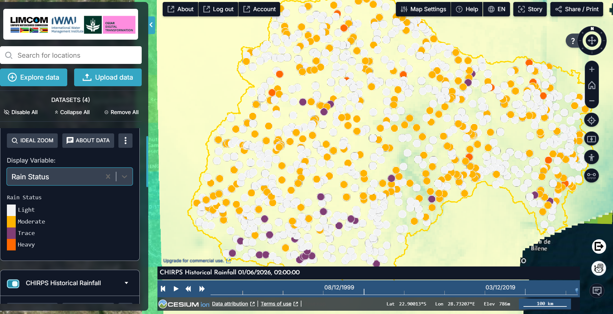
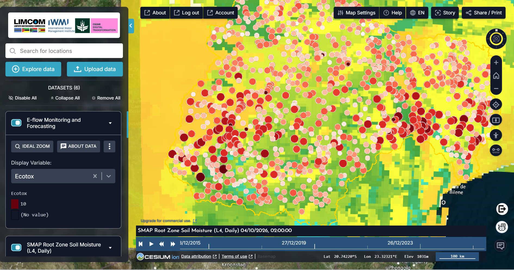
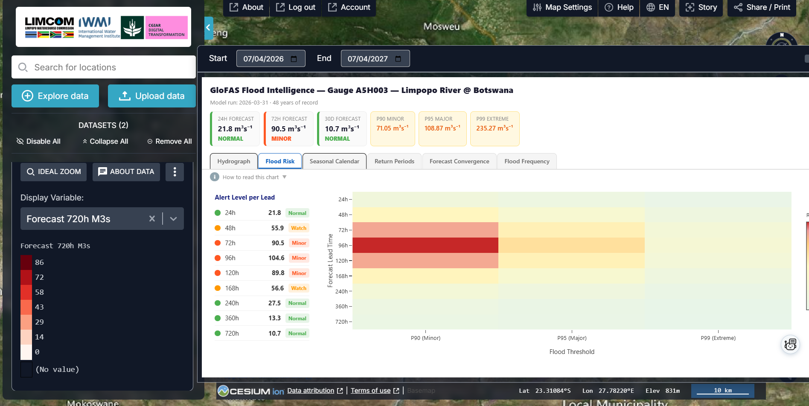
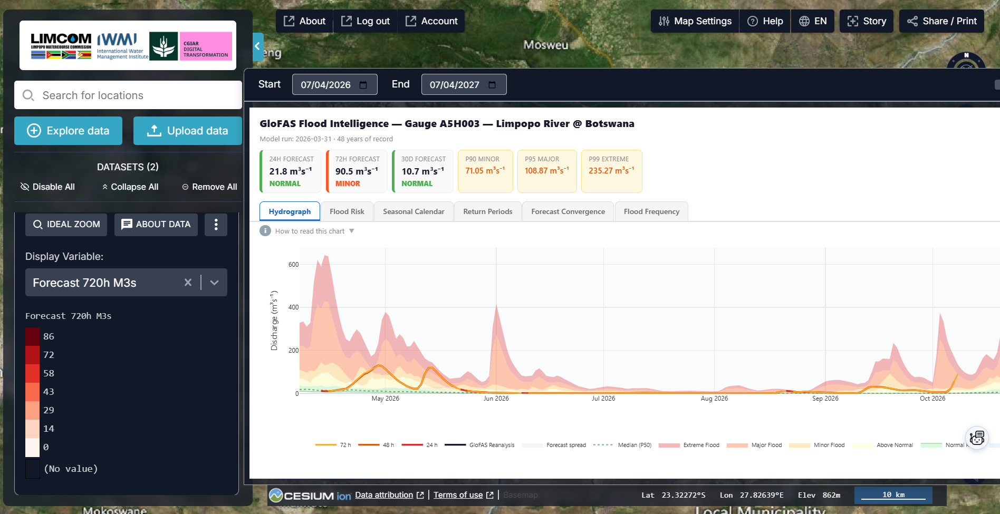

Preparação para a época de El Niño¶
Um departamento nacional de água quer transformar um sinal climático sazonal numa decisão de gestão dos recursos hídricos. Esta página segue o caso de aplicação que o Department of Water and Sanitation (DWS) do Botsuana preparou para o IWMI em outubro de 2026, quando testou o portal como gestor de água, e não como visualizador de clima, antes da época de El Niño 2026/27.
A pergunta¶
O El Niño diz atenção, mas não diz onde, quando nem como os recursos hídricos vão responder. As previsões de precipitação, humidade do solo e caudal dizem se a preocupação climática se está a tornar um problema de recursos hídricos. O resultado útil é antecedência: tempo para verificar, comunicar, rever alocações e preparar.
A pergunta do teste foi, por isso: pode o portal suportar toda essa cadeia, do sinal climático à ação de gestão, para um país durante uma época?
| Quem | Decisão | Frequência |
|---|---|---|
| Departamento nacional de água (DWS Botsuana) | Verificação, comunicação, revisão de alocações, preparação | Boletim semanal de situação ao longo da época |
| Operadores de barragens e de abastecimento | Reter ou libertar armazenamento; restrições de abastecimento | A cada corrida da previsão durante um aviso |
| Comité de bacia / LIMCOM | Alocação transfronteiriça e coordenação de aviso prévio | Sazonal (out., jan., abr.) |
| Autoridades de gestão de desastres | Pré-posicionamento para eventos de caudal elevado de curta duração | Quando uma estação cruza um limiar |
Em resumo — o que o teste de outubro de 2026 encontrou
- O fluxo de trabalho de seca mais forte é precipitação → humidade do solo na zona radicular: a chuva afastou-se do normal, e isso chegou à bacia?
- Uma preocupação sazonal de seca pode coexistir com um evento de caudal elevado de curta duração. A estação A5H003 (Limpopo na fronteira do Botsuana) previa 90,5 m³/s a 72 h, acima do seu limiar menor P90 de 71,05 m³/s, enquanto a perspetiva a 30 dias voltava ao normal.
- O contributo prático do portal é a antecedência: vários horizontes de previsão face aos limiares da estação, numa única vista de bacia que atravessa fronteiras nacionais.
- Manter ambas as vigilâncias abertas toda a época: seca (défices, humidade do solo, caudais baixos, armazenamento) e caudal elevado (previsões de curto prazo).
Como se encadeia o fluxo de trabalho¶
flowchart TD
A[1 · Precipitação<br/>CHIRPS · Rainfall Anomalies] --> AQ{O sinal sazonal<br/>está a aparecer?}
AQ -- não --> Z[Boletim semanal de rotina]
AQ -- sim --> B[2 · Humidade do solo<br/>SMAP Root Zone Soil Moisture]
B --> BQ{O stress na bacia<br/>está a instalar-se?}
BQ -- sim --> C[3 · Caudal<br/>GloFAS Verified Gauges · Eflow Alert Levels]
BQ -- não --> Z
C --> D[4 · Previsão<br/>nível de alerta por antecedência vs P90 / P95 / P99]
D --> E[5 · Ação<br/>verificar · comunicar · alocar · preparar]O teste usou apenas o que estava visível no portal em produção. Onde uma camada não carregou ou um valor não pôde ser verificado, isso foi registado como uma constatação de experiência de utilização e não preenchido com suposições (ver Limites).
Dados que vai usar¶
| Fase | Conjunto de dados | Onde no catálogo | Notas |
|---|---|---|---|
| Precipitação | CHIRPS Historical Rainfall (variável Rain Status) · Rainfall Anomalies | Drought Monitoring & Risk Assessment → Meteorological Drought | Círculos de estação; anomalias face ao normal 1991–2020, clicáveis para um gráfico |
| Solo | SMAP Root Zone Soil Moisture (L4, Daily) | → Soil Moisture | ~9 km, diário; a zona radicular é o que as culturas e a bacia sentem |
| Caudal e previsão | GloFAS Discharge Forecast – Verified Gauges (variável Forecast 720h M3s) | Flood Monitoring → Discharge Forecasting (GloFAS) | Clique numa estação para o cartão Flood Intelligence: previsões a 24 h / 72 h / 30 dias, limiares P90 / P95 / P99, hidrograma |
| Rios (lado da seca) | E-flow Monitoring and Forecasting · Eflow Alert Levels | → Hydrological Drought & E-flows | Confirmação de caudais baixos |
| Armazenamento | Dams & Reservoirs Basin Level Estimates | Water Resources → Reservoirs | Classe de armazenamento por barragem |
| Perspetiva sazonal | Limpopo Rainfall Anomaly Forecast · Seasonal Forecast Anomaly (7-month) | Natural Basin Characteristic → Climate | Anomalias probabilísticas |
Passo a passo¶
- O sinal sazonal está a aparecer? Explorar dados → pesquisar
CHIRPS→ adicionar CHIRPS Historical Rainfall e definir a variável para Rain Status; percorra a linha do tempo pelos primeiros meses da época (Figura 1). Depois adicione Rainfall Anomalies e clique nas estações da sua área para o desvio face ao normal 1991–2020. - O stress na bacia está a instalar-se? Adicione SMAP Root Zone Soil Moisture (L4, Daily) (Figura 2). Um défice de chuva que aparece na zona radicular chegou à bacia; um que não aparece ainda é apenas meteorologia.
- Como está o sistema a responder? Adicione GloFAS Discharge Forecast – Verified Gauges, defina a variável para Forecast 720h M3s e clique numa estação, para o Botsuana A5H003 – Limpopo River @ Botswana. O cartão dá as previsões a 24 h, 72 h e 30 dias, o nível de alerta de cada uma e os limiares da estação.
- O que pode acontecer a seguir? Abra o separador Flood Risk para o nível de alerta a cada antecedência (Figura 3) e depois o separador Hydrograph para a forma e a dispersão da previsão (Figura 4). Use a antecedência que corresponde à pergunta de gestão: dias para operações, semanas para alocação.
- O que deve o departamento fazer? Traduza os níveis nas ações Verde / Âmbar / Vermelho acordadas para essa estação (ver Indicadores e o que fazer).
- Mantenha a vigilância de seca aberta. Na mesma sessão adicione Eflow Alert Levels e Dams & Reservoirs Basin Level Estimates: caudais baixos e pressão sobre o armazenamento são o sinal lento por trás do rápido.
- Guarde a sequência como História: uma cena por fase é o boletim semanal.
Ler os gráficos¶
As figuras abaixo são os próprios ecrãs do portal durante o teste de outubro de 2026.


- Avalie o padrão, não uma estação: uma época que começa light numa sub-bacia inteira quando o normal é moderate é a primeira assinatura do El Niño.


- Este par, défice de chuva sobre zona radicular seca, foi o fluxo de trabalho de seca mais forte do teste: separa não choveu de a bacia está sob stress.


- Leia o percurso, não um número: Normal → Watch → Minor (72–120 h) → Watch → Normal é um episódio de curta duração com alguns dias de antecedência, não uma cheia sazonal.
- O pico a 96 h aproxima-se mas fica abaixo do limiar maior P95: uma situação de verificar e preparar, não de evacuar.


- A subida é rápida nos próximos dias e a dispersão alarga com a antecedência; as antecedências mais longas voltam ao normal. Valor para a gestão: tempo para verificar face às estações do próprio departamento e para preparar.
Indicadores e o que fazer¶
O portal dá os níveis; o departamento define as ações. O teste propôs limiares Verde / Âmbar / Vermelho calibrados para o Botsuana, por estação, ligados a ações. Um ponto de partida coerente com as classes do próprio portal:
| Vigilância | Indicador | Nível | Ação típica |
|---|---|---|---|
| Caudal elevado | Previsão GloFAS na estação | Normal a todas as antecedências | Boletim semanal de rotina |
| Caudal elevado | Previsão GloFAS na estação | Watch (acima de P90 a qualquer antecedência) | Verificar com estações nacionais; alertar operadores |
| Caudal elevado | Previsão GloFAS na estação | Minor (P90–P95 em 5 dias) | Comunicar a jusante; rever a operação das barragens |
| Caudal elevado | Previsão GloFAS na estação | Major ou Extreme (acima de P95 / P99) | Protocolo de gestão de desastres (ver Cheias) |
| Seca | Rainfall Anomalies | Abaixo do normal em 2+ meses consecutivos de nov. a mar. | Revisão de alocações; aviso de seca |
| Seca | Humidade SMAP na zona radicular | Abaixo do normal sazonal por > 4 semanas | Recomendações de rega; pontos de água para o gado |
| Seca | Eflow Alert Levels · classe das albufeiras | Nível 3+ ou armazenamento Low | Limites de captação; restrições de abastecimento (ver Secas) |
Exemplo prático — o teste de outubro de 2026 em A5H003¶
- Adicione GloFAS Discharge Forecast – Verified Gauges, variável Forecast 720h M3s, e clique em A5H003 – Limpopo River @ Botswana. O cartão indica: 24 h 21,8 m³/s (Normal), 72 h 90,5 m³/s (Minor), 30 dias 10,7 m³/s (Normal).
- Separador Flood Risk (Figura 3): o nível sobe por Watch a 48 h até Minor a 72, 96 e 120 h, atinge 104,6 m³/s e volta a Normal por 240 h. Face ao limiar maior P95 da estação, 108,87 m³/s, é um episódio de caudal elevado de curta duração.
- Separador Hydrograph (Figura 4): a subida é íngreme e a banda de dispersão larga, portanto verifique antes de agir: compare com as leituras do próprio departamento no mesmo troço.
- Entretanto o quadro sazonal (Figuras 1 e 2) é de um início seco com zona radicular a secar: a vigilância de seca mantém-se aberta enquanto a de caudal elevado corre os seus poucos dias.
- A decisão: Âmbar para o troço durante 3–5 dias (verificar, informar os operadores a jusante), com a narrativa sazonal de seca inalterada. Guardado como História, esse é o boletim da semana.
Lista de verificação do boletim¶
O teste propôs um boletim semanal de situação dos recursos hídricos durante o El Niño. O seu conteúdo, na ordem do fluxo de trabalho:
- Precipitação: estado da época até à data e anomalia nas estações nacionais
- Humidade do solo na zona radicular face ao normal sazonal
- Caudal observado e previsto nas estações prioritárias acordadas, com nível de alerta por antecedência
- Classe de armazenamento das albufeiras e tendência das águas subterrâneas
- Declaração de risco, confiança e ação Verde / Âmbar / Vermelho recomendada
- Ligação da História que reproduz as cenas
Limites a ter em conta¶
Constatações relatadas pelo teste, tanto para a equipa do portal como para os utilizadores:
- Sincronização das observações. O cartão de A5H003 mostrava uma previsão atual mas uma data de Latest Obs de 30 de março de 2002. Trate a saída do GloFAS como uma previsão a verificar com as estações nacionais, não como observação.
- Acesso às camadas sazonais. Algumas camadas sazonais devolveram erros de mosaico ou de pré-visualização durante o teste; se uma camada não carregar, registe-o em vez de substituir por uma suposição.
- Verificação das previsões. Ligar os dados hidrométricos do DWS (fluxos HYDSTRA / TWMS / LIMIS) ao portal permitiria comparar previsto com observado nas estações prioritárias; faz parte do piloto proposto.
- Os limiares GloFAS são percentis do registo da própria estação, não níveis de cheia levantados no terreno (ver Cheias).
- Os gráficos de estações e locais precisam de sessão iniciada.
Relacionado¶
Cheias · Secas · Monitorização de albufeiras · Caudais ecológicos · Histórias e Partilha